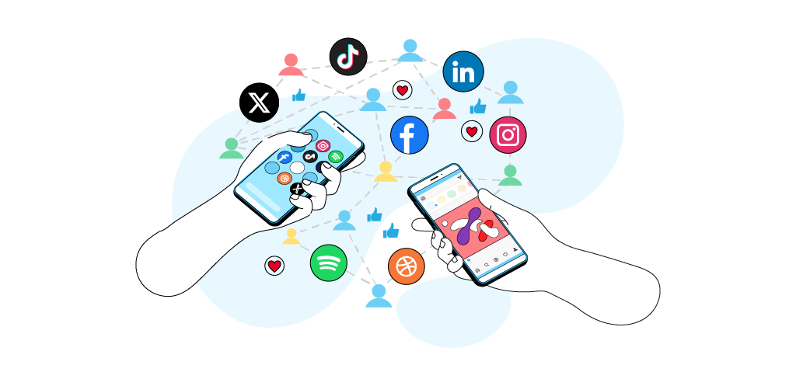

Безопасность в социальных сетях
Соцсети — место общения и развлечений, но также главная площадка для сбора личных данных, кибербуллинга и манипуляций.

Что никогда не стоит публиковать
Помни: всё, что ты публикуешь в интернете, может стать доступным любому человеку — даже если ты потом удалишь пост. Скриншоты живут вечно.
- Домашний адрес — по нему могут найти тебя в реальной жизни
- Номер телефона — станет источником спама, мошеннических звонков и вишинга
- Место учёбы и расписание — позволяет предсказать, где ты будешь и когда
- Сканы документов — паспорт, СНИЛС, банковская карта категорически запрещены
- «Дома никого нет» — прямое приглашение для квартирных воров
- Геотеги и фото с узнаваемыми ориентирами — раскрывают твоё местоположение
Доксинг — это публикация чужих личных данных без согласия. Если кто-то сливает твой адрес, номер или фото — это уголовно наказуемо по ст. 137 УК РФ «Нарушение неприкосновенности частной жизни».
Настройки приватности: пошаговая инструкция
ВКонтакте
- Зайди в «Настройки» → «Приватность»
- «Кто видит мою страницу» → поставь «Только друзья»
- «Кто может писать мне личные сообщения» → «Друзья и друзья друзей»
- «Кто видит мой список друзей» → «Только я» или «Друзья»
- Убери галочку «Транслировать онлайн» чтобы скрыть время посещения
Telegram
- «Настройки» → «Конфиденциальность и безопасность»
- «Номер телефона» → «Никто» или «Мои контакты»
- «Последняя активность» → «Никто»
- «Фото профиля» → «Мои контакты»
- «Переадресация сообщений» → «Никто» (чтобы не раскрывать аккаунт при пересылке)
Instagram / Facebook
- Переведи профиль в закрытый режим — новые подписчики требуют одобрения
- Отключи геолокацию для приложения
- Удали все геотеги с архивных публикаций
- Раз в месяц проверяй список приложений с доступом к аккаунту и удаляй лишние
Совет: Погугли себя — введи своё имя и фамилию в поиск. Посмотри, какая информация о тебе доступна в открытом доступе. Если найдёшь что-то лишнее — удали или закрой.
Незнакомцы в сети: правила общения
- Не принимай заявки в друзья от незнакомых — за красивым профилем может скрываться злоумышленник
- Не отправляй фото незнакомцам, даже «безобидные» — их могут использовать против тебя
- Никогда не давай незнакомцам свой номер телефона, адрес или данные о семье
- Если кто-то в сети кажется «слишком хорошим» — это тревожный сигнал
Груминг — скрытая угроза
Груминг — это когда взрослый человек выдаёт себя за подростка, чтобы войти в доверие и манипулировать ребёнком. Это происходит в играх, соцсетях и мессенджерах.
Признаки груминга
- Незнакомец проявляет к тебе чрезмерное внимание и «понимает тебя лучше всех»
- Просит хранить общение в секрете от родителей и друзей
- Постепенно просит присылать фотографии или личную информацию
- Предлагает подарки, деньги или привилегии в играх
- Угрожает или манипулирует, если ты отказываешь
Если ты столкнулся с грумингом — немедленно расскажи родителям или другому доверенному взрослому. Не удаляй переписку — она понадобится как доказательство. Это не твоя вина.
Кибербуллинг: что делать
Кибербуллинг — травля, оскорбления и угрозы в интернете. С ним сталкивается каждый седьмой российский школьник.
Если тебя травят онлайн
- Не отвечай — это только подпитывает интерес обидчика
- Сохрани доказательства — делай скриншоты сообщений с датой и отправителем
- Заблокируй обидчика на всех платформах
- Пожалуйся администрации — используй кнопку «Пожаловаться» на публикацию или профиль
- Расскажи взрослому — родителям, учителю или школьному психологу. Это не слабость
- Если угрозы реальные — обратись в полицию. Онлайн-угрозы наказываются по ст. 119 УК РФ
Помни: ты не виноват в том, что тебя травят. Это проблема обидчика и его неспособности справляться с собственными чувствами. Всегда есть люди, которые готовы помочь.